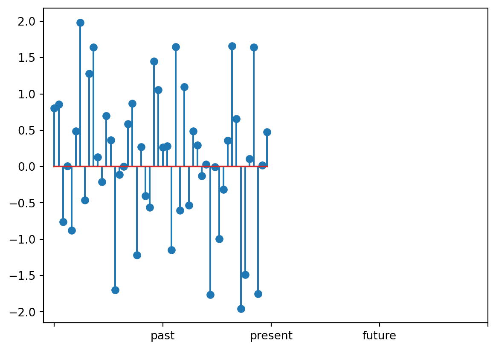
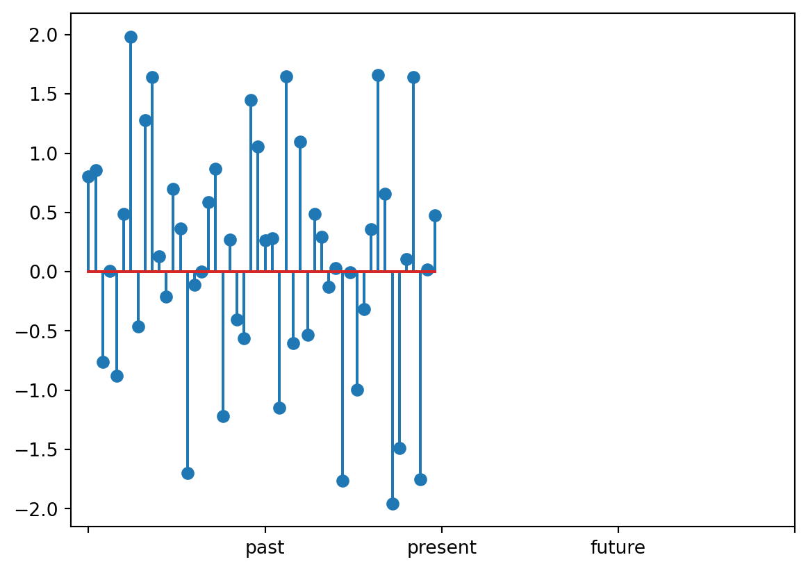
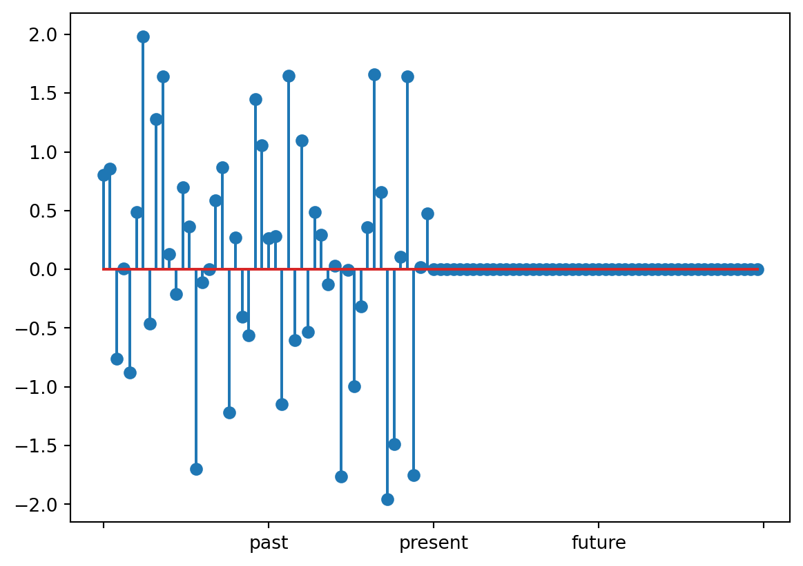

Show the code
import numpy as np
from matplotlib import pyplot as plt
np.random.seed(3264)
x = np.random.randn(50)
plt.stem(x)
plt.xticks([0,25,50,75,100],['','past','present','future',''])
plt.show()
The case for boring generative AI
Reed Meyerson
March 19, 2023
Generative AI is the new hotness. It’s flashy, exciting, full of pizazz. There’s a certain showmanship in asking a machine for an image of a monkey riding a unicycle and having it spit out an image of a monkey riding a unicycle.
Most data scientists don’t deal with such exciting things. For most companies, pictures of monkeys riding unicycles have no effect on the bottom line; these flashy displays have seemingly nothing to do with business analytics. However, the techniques of generative AI are not inherently flashy and have many potential applications.
This is the first in a series of posts on Generative Diffusion Models*,[1],[2],[3] . In this post, I argue that the intersection of “generative models like reverse diffusion” and “tools used to solve non-flashy problems” should be non-zero. In future posts we will implement reverse diffusion models, use them to solve inverse problems, explore their latent spaces, and utilize them as building blocks for unsupervised techniques.
Generative diffusion models are techniques for learning† a probability distribution from data. When applying these models, we hope that the learned distribution is similar to the ground-truth distribution that the original data was sampled from.
In this post, we will not discuss how generative diffusion models work (that will come later). Instead, we will accept what they accomplish:
The following examples demonstrate why it is sometimes necessary to learn a distribution of values rather than estimate a single value or fit a fixed function.
Your boss comes to you with the following time series:

There are 50 data points from the past and they want you to predict the next 50 in the future. After analyzing the data, you determine this is standard Gaussian noise. Thus, the likelihood for the next 50 points is proportional to a Gaussian,
\[p(x_{51},x_{52},\cdots,x_{100}) \propto e^{-(x_{51}^2+x_{52}^2+\cdots +x_{100}^2)/2}\]
and is maximized when all values are zero. You conclude that the most likely prediction for the future is given by
\[x_{51}=x_{52}=\cdots=x_{100}=0\]
You plot your prediction and show it to your boss:

To which your boss complains that the left half of the plot looks nothing like the right half, so this can’t possibly be right.
The issue here is that the most likely future is not a typical future. However, there is not a single typical future or a most typical future; there are a distribution of typical futures, and knowing that distribution is the goal of forecasting.
If \(p\) is a distribution of time series that you believe your time series is from, the problem of forecasting can be stated as learning the distribution of the future values conditioned on the past measurements. That is, to simulate the future, we want to sample
\[x \sim p(\texttt{future}|\texttt{past})\]
Of course, in this case, the exact solution is relatively simple, \[x_{51\to 100} \sim \mathcal{N}(0,I_{50\times 50})\] and simple statistics, Bayesian inference, or standard forecasting techniques like ARIMA should all yield something similar to the ground truth distribution.
When a blurry image is taken, some information about the original scene is lost. That is, given a blurry image, we can’t say with certainty which specific clear image it came from. There might be a ‘most likely’ clear image, but as before, that most likely image might not be very typical, and it doesn’t tell us much about the distribution of clear images the blurry image might have come from. Thus, it is unnatural to solve this as a regression problem, by training a single deterministic function
\[f :\texttt{blurry images}\to \texttt{clear images}\]
Rather, let \(p\) be the distribution of \((\texttt{clear image},\texttt{blurry image})\) pairs. We can recast the image deblurring problem as sampling from the marginal distribution of clear images conditioned on the blurry image marginal value*.
\[x \sim p(\texttt{clear image}|\texttt{blurry image})\]
Similarly, for inpainting, there may be many ways to fill an unknown region with plausible pixel values. If \(q\) is a distribution of images, then we can cast inpainting as conditionally sampling the unkown region given the known region.
\[x \sim q(\texttt{unknown region} | \texttt{known region})\]
For these examples, generative diffusion is a great candidate for modeling these distributions because
In particular, item (2.) is something we cannot overlook. Before using a technique as expensive as generative diffusion, ask yourself if you really need the accuracy. Even if your distribution is very complicated, it may be perfectly acceptable to underfit.
Broadly speaking, an inverse problem is to reconstruct a system from information about that system. Often, we think of the act of obtaining the information as a “measurement”. For some inverse problems, the measurements uniquely specify the system. In this case, we can try to form a deterministic function that reconstructs the system from the information
\[f:\texttt{information} \to \texttt{system}\]
Deblurring and inpainting are both inverse problems. The system is the original image, and the information we have is the blurred image or the obstructed image, respectively. However, as we noted before, given a specific measurement (i.e. a specific blurred/obstructed image) there is not a single system (i.e. a clear/unobstructed image) that the measurement could have come from. When this is the case, we say the inverse problem is ill-posed. Ill-posed inverse problems can be solved by determining the conditional distribution
\[p(\texttt{system}|\texttt{measurements})\]
Intuitively, this conditional distribution tells you
“Find out about something from measurements/information” is hilariously broad. Thus, inverse problems are everywhere. Here is a very small list:
The list is practically endless. Your company is almost certainly either solving one or more inverse problems or consuming the solutions of one or more inverse problems.
We have established that “learning probability distributions” is a very important tool for solving inverse problems, and inverse problems are everywhere. So, you should probably care about learning probability distributions.
But it still remains: why generative diffusion? There are simpler, more computationally efficient and more interpretable models from classical and Bayesian statistics. Not to mention other generative machine learning models like a GANs or auto encoders.
This question is similar to the question “Should I use a neural network in a regression problem?”*. Generative diffusion models, as tools for learning distributions are high variance and low bias. The low bias is consistent with the fact that they are expressive enough to approximate any probability distribution. However, you will need a lot of data to counteract the high variance.
Here are some things to consider:
Most people will get to the end of this list and realize there are better tools to solve their problem. However, some people will realize that they have a very complicated distribution, and they care deeply about capturing its intricacies. It will be worth it for them to collect the large amount of data required and allocate a large computational budget.